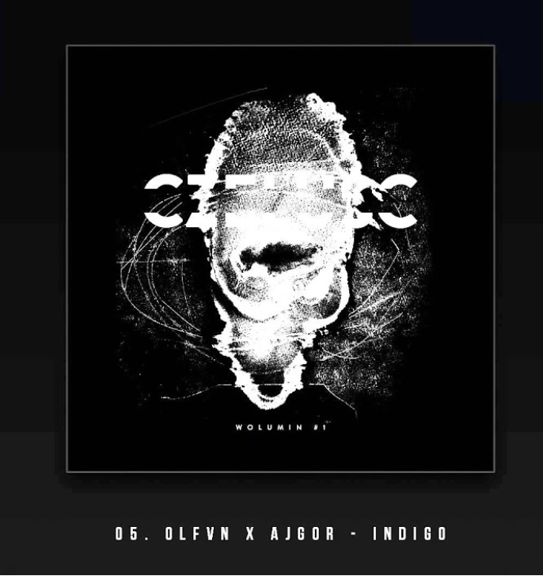
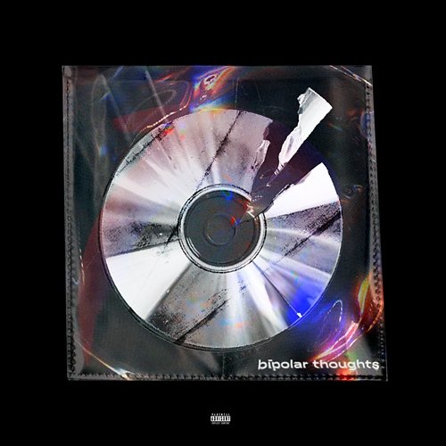
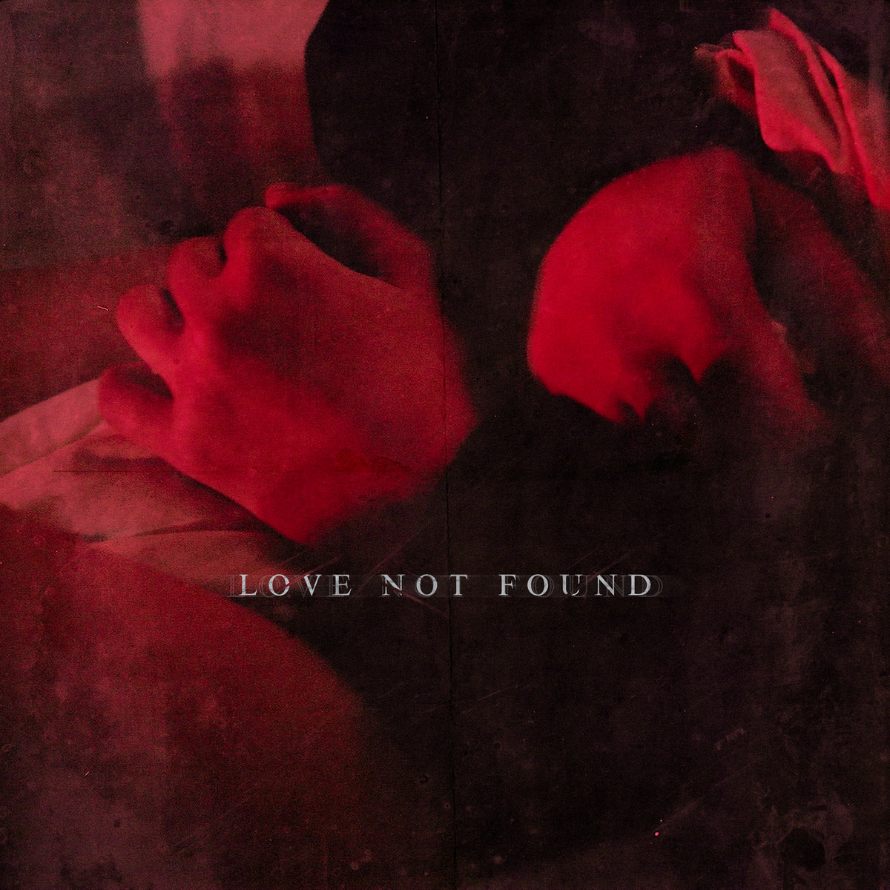
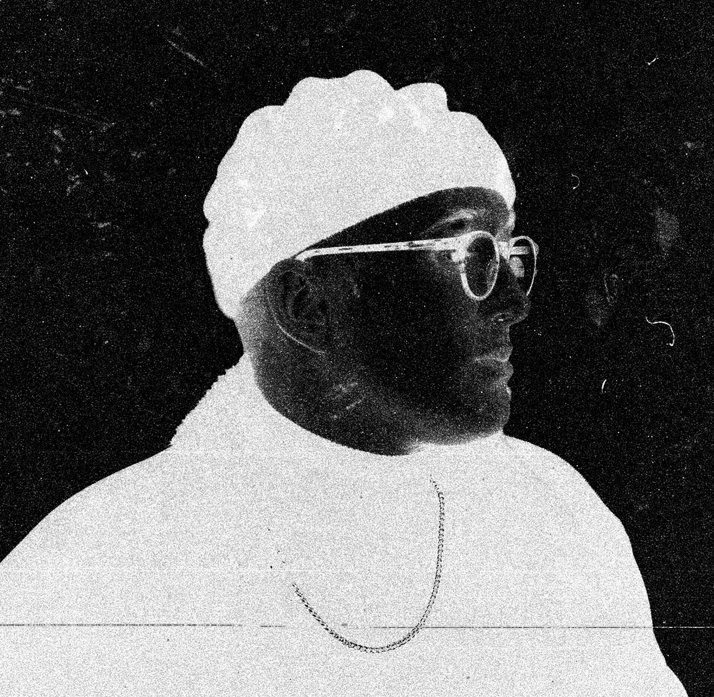

Ajgor, music producer based in Poland, brings a breath of freshness to the music scene, skillfully combining trap elements with subtle, bedroom sounds and adding his own unique dark vibe.
He was twice featured on Czeluść mixtapes ("Indigo" produced with OLFVN on Czeluść vol. #1 and "Miłość" on Czeluść vol. #3).
His album "Bipolar Thoughts", created with OLFVN was released on April 25th, 2019 by Soho Palace.
In December 13th, 2019 Ajgor released his debut album "Love Not Found" following by the "Revival" EP album released in 2021.
 Ajgor's music was used by Nina McNeely in a choreography presented by Brian Friedman in "The Main Event" in Los Angeles, California. You can watch it here.
Was also featured on polish radio stations like "Czwórka" or "Radio Kampus".
Performed live DJ sets in every major polish city.
Over 1 milion plays over all streaming platforms.
At the moment, the Ajgor music project has no further plans.